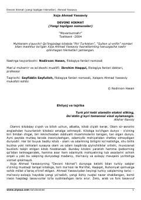

DHXoja Ahmad Yassaviyning yangi topilgan hikmatlari va ilmiy-ma'rifiy sharhlari jamlangan to'plam.
Ushbu kitobda mutasavvuf shoir Xoja Ahmad Yassaviy hazratlarining ilgari nashr etilmagan va yangi topilgan hikmatlari jamlangan bo'lib, ular adabiy-ma'rifiy ahamiyatga ega. Nashrga tayyorlovchi va izlanishlar muallifi Nodirxon Hasan bo'lib, asar yassaviyshunoslik tarixida muhim manba sanaladi. Kitobda turkiy xalqlar ma'naviyati va tasavvufiy qarashlarning ildizlari tahlil qilingan.